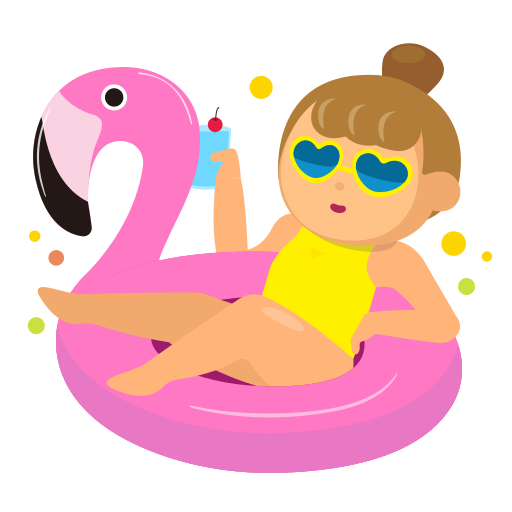

Mes passions
J’aime beaucoup regarder des vidéos et des séries, en particulier les genres horreur, horreur psychologique et mystère. J’apprécie les intrigues captivantes et les histoires qui font réfléchir et surprennent.
Mes loisirs et sports
Pour me détendre, je pratique la natation. J'ai aussi joué au tennis auparavant.

Mes qualités
- Créatif
- Sérieuse
- Travail en équipe
- Capacité d'analyse
- Capacité d'adaptation
- Esprit de responsabilité
- Sens de l'organisation